Caja de Herramientas Matemáticas
Manual de usuario
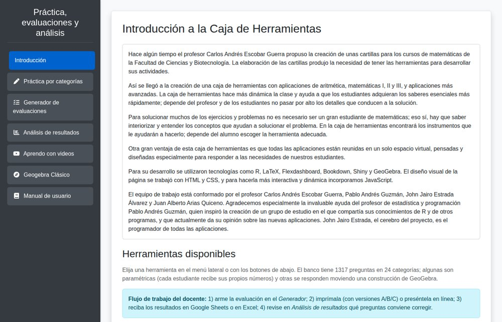
Facultad de Ciencias y Biotecnología
Versión 2.0 · noviembre de 2026
Esta aplicación de la Caja de Herramientas sirve para practicar y para evaluar matemáticas con un banco de más de 1300 preguntas en 24 categorías: aritmética, álgebra, ecuaciones, geometría, cálculo diferencial, integral y en varias variables, ecuaciones diferenciales, álgebra lineal, estadística, análisis numérico y más.
Las opciones de cada pregunta se barajan para cada estudiante. Hay preguntas paramétricas, en las que cada estudiante recibe sus propios números, y tareas de GeoGebra, que se responden moviendo una construcción.
index.html. No necesita instalación ni servidor.lib/).exam.html es la página del estudiante para la evaluación en línea. Normalmente se abre sola desde el generador (sección 6).| Botón del menú | Para qué sirve |
|---|---|
| Introducción | Presentación de la Caja de Herramientas y tarjetas «Abrir» para cada herramienta. |
| Práctica por categorías | Práctica libre del estudiante (sección 4). |
| Generador de evaluaciones | Armar, imprimir, exportar y presentar evaluaciones (secciones 5 y 6). |
| Análisis de resultados | Dificultad, discriminación y distractores de cada pregunta (sección 8). |
| Aprendo con videos | Videos del canal del profesor asociados a las categorías (sección 10). |
| Geogebra Clásico | Enlaces a GeoGebra y comandos para comprobar respuestas (sección 11). |
| Manual de usuario | Este manual (sección 12). |
Cada pestaña conserva su estado: si sale del generador a mirar un video y vuelve, la evaluación en construcción sigue ahí. La dirección cambia según la pestaña (por ejemplo, index.html#generador), así que puede guardar un marcador a una pestaña concreta.
Los avisos aparecen arriba a la derecha, dentro de la página: azul (información), amarillo (atención), verde (hecho) y rojo (error). Las confirmaciones (por ejemplo, «¿Finalizar la evaluación?») se muestran en una ventana propia que se responde con el ratón o con el teclado (Escape cancela).
Sirve para estudiar: el estudiante elige los temas, responde y al final ve qué acertó, la respuesta correcta y la pista de cada pregunta.
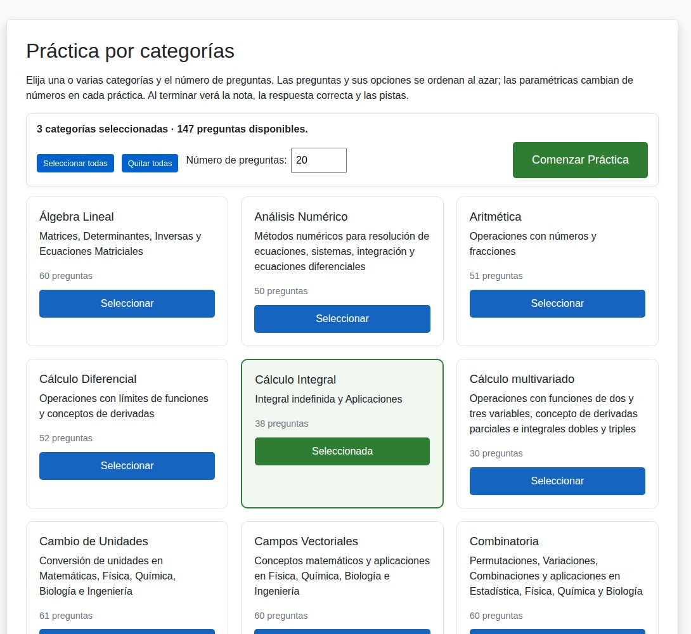
La fórmula de cada pregunta aparece debajo del enunciado. Las preguntas que pueden resolverse con una calculadora muestran el botón Abrir calculadora GeoGebra (opcional): GeoGebra se carga solo cuando se pide (necesita internet) y, una vez abierta, se mantiene en las preguntas siguientes. Con Ampliar, Reducir y Ventana Emergente se ajusta su tamaño.
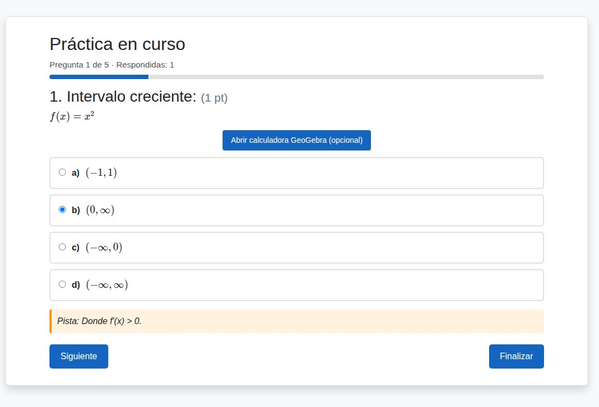
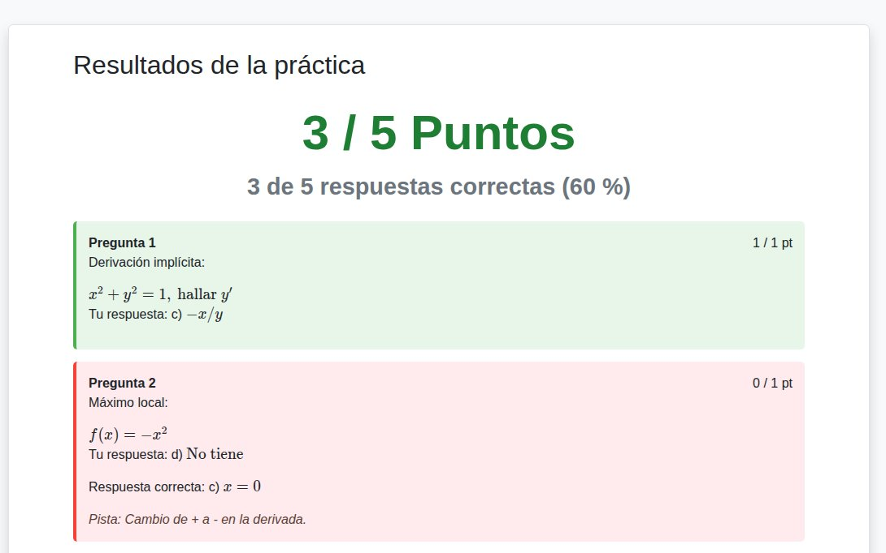
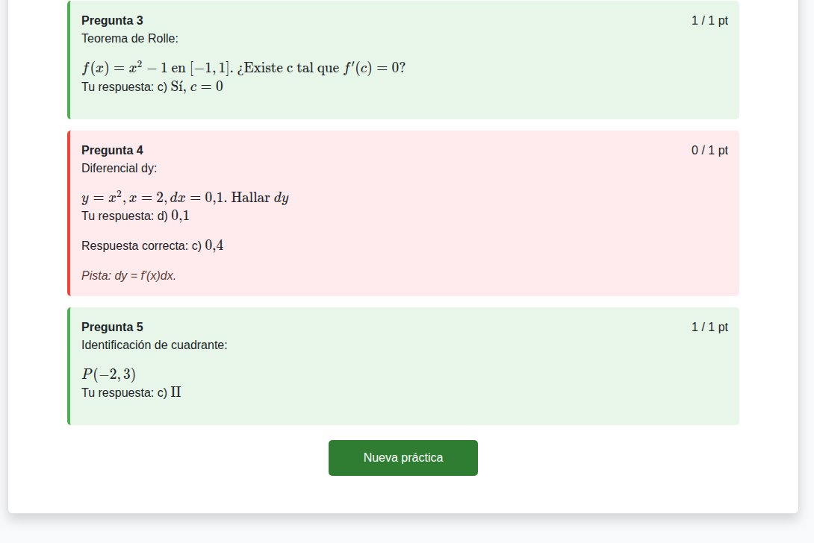
Con Nueva práctica se vuelve a la elección de categorías, con las mismas categorías ya marcadas.
La evaluación necesita al menos 20 preguntas que sumen exactamente 50 puntos.
calculodiferencial_51) o filtre por categoría, y pulse +. El banco se muestra de 40 en 40, con los botones «Anterior» y «Siguiente». Las preguntas ya agregadas se marcan con ✓.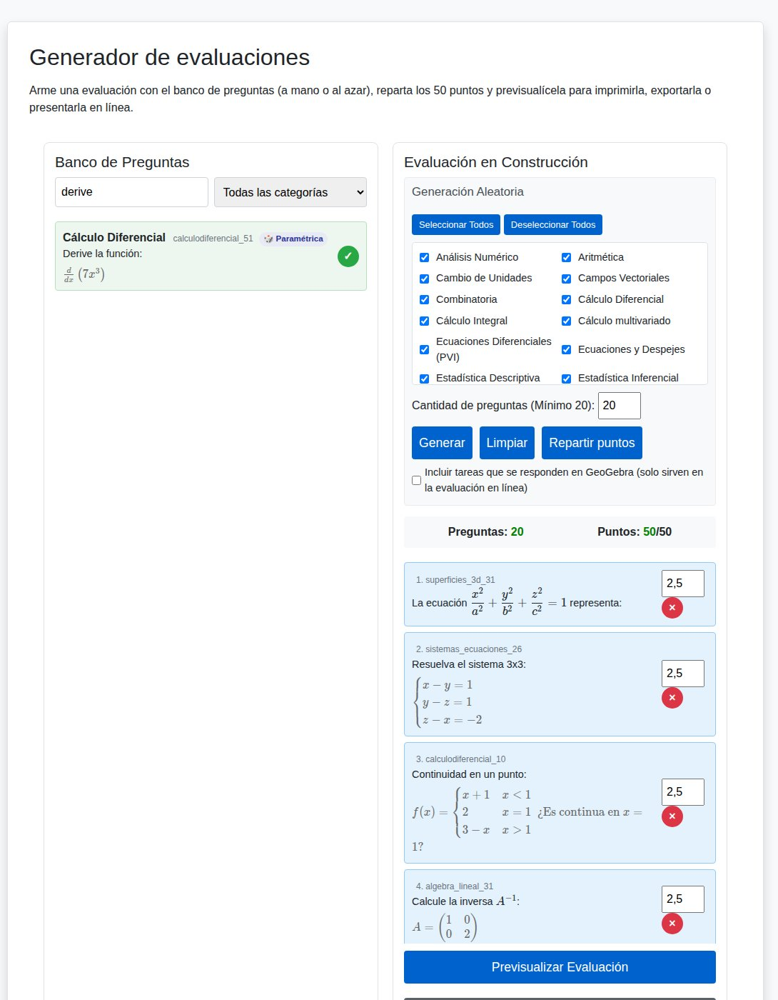
La previsualización muestra la hoja tal como se imprimirá: encabezado con título, fecha, líneas para el nombre, el ID y la fecha de realización, y las preguntas con sus opciones a), b), c)… ya barajadas.
\ExamInstrBox), y se guarda con la evaluación (JSON).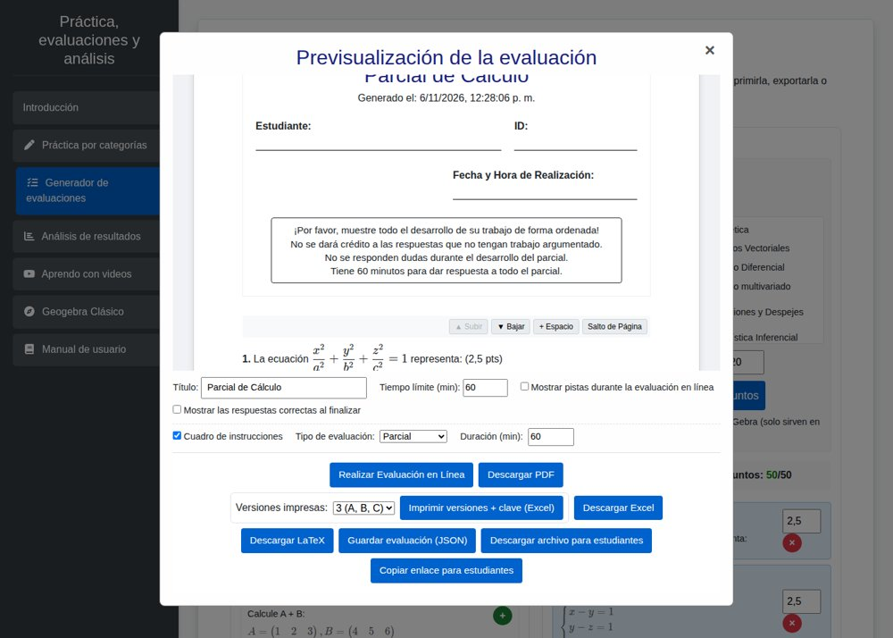
| Botón | Qué produce |
|---|---|
| Descargar PDF | Abre el diálogo de impresión del navegador; elija «Guardar como PDF» o una impresora. |
| Descargar Excel | Hoja «Evaluación» (pregunta, tipo, opciones, respuesta correcta y puntos) y hoja «Clave» para calificar la versión impresa. |
| Descargar LaTeX | Archivo .tex listo para compilar, con las opciones etiquetadas a), b), c). |
| Guardar evaluación (JSON) | Para volver a cargarla después en el generador (sección 5.4). |
| Realizar Evaluación en Línea / Descargar archivo para estudiantes / Copiar enlace | Evaluación en línea (sección 6). |
Para que estudiantes vecinos no tengan la misma hoja, elija el número de versiones (de 2 a 6) y pulse Imprimir versiones + clave (Excel).
Claves_versiones_….xlsx, con la hoja «Claves» (la respuesta de cada número en cada versión) y una hoja por versión (equivalencia con la pregunta de la versión A, ID, texto de la respuesta y puntos).Guardar evaluación (JSON) conserva el título, la configuración, los puntos, los saltos de página, el orden de las opciones y los números de las paramétricas. Con Cargar evaluación guardada (JSON), debajo de «Previsualizar», se recupera idéntica. Si después de guardarla se modificó el banco y cambió el ID de una pregunta, la aplicación la reconoce por su contenido y lo informa.
| Situación | Qué hacer |
|---|---|
| El estudiante presenta en el mismo computador del docente | Realizar Evaluación en Línea: se abre exam.html en una ventana nueva. |
| Cada estudiante en su computador, con la carpeta de la aplicación | Descargar archivo para estudiantes → archivo .examen. El estudiante abre exam.html y pulsa Cargar archivo de evaluación. |
| La aplicación está publicada en internet (por ejemplo, GitHub Pages) | Copiar enlace para estudiantes y compartir el enlace. |
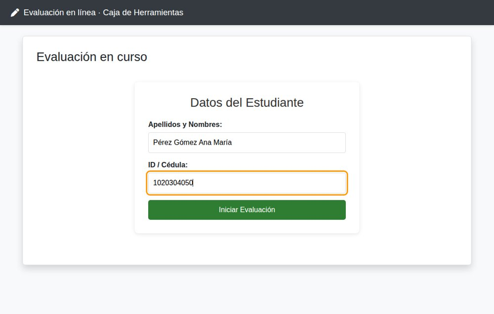
exam.html.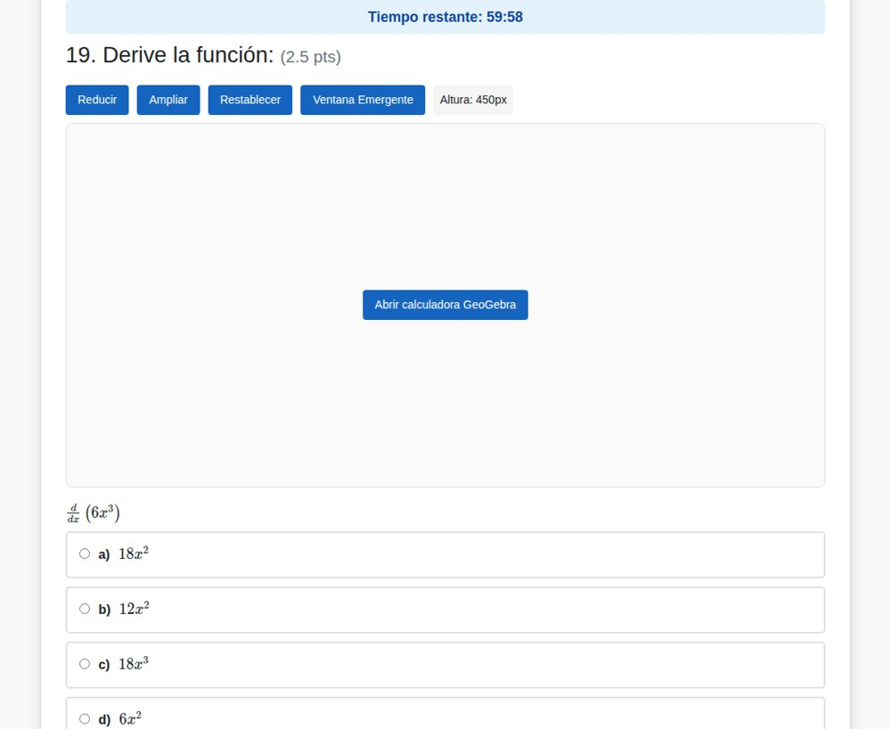
Al finalizar, el estudiante puede descargar su detalle en Excel. Si el docente configuró Google Sheets (archivo google_apps_script/INSTRUCCIONES.md y dirección en js/config.js), la nota y el detalle de cada pregunta llegan solos a su hoja de cálculo. Sin internet, el resultado queda guardado en el equipo y se reenvía la próxima vez que se abra la aplicación con conexión; también hay un botón «Reintentar ahora».
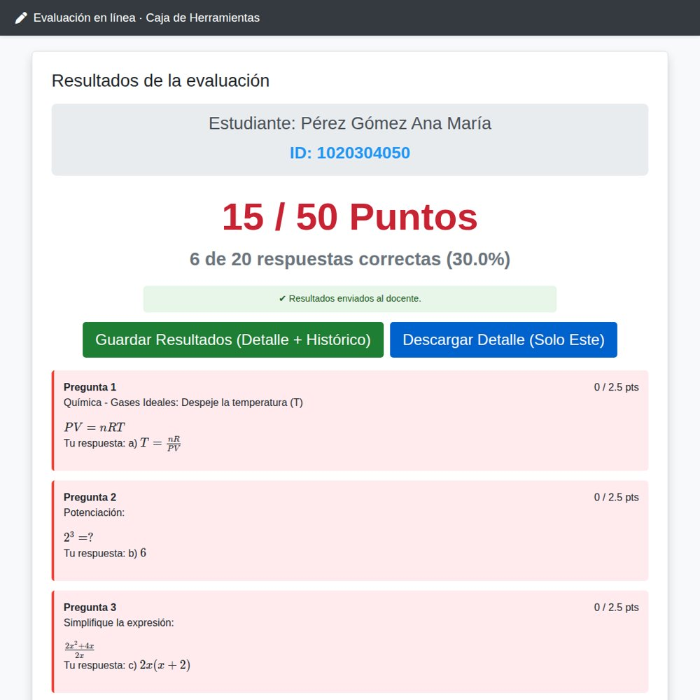
| Tipo | Cómo se reconoce | Cómo se responde |
|---|---|---|
| Opción múltiple | La mayoría del banco. | Se marca una opción. Las opciones se barajan para cada estudiante. |
| Paramétrica | Etiqueta «🎲 Paramétrica» en el generador. | Igual que la de opción múltiple, pero los números cambian para cada estudiante, en cada práctica y en cada versión impresa. |
| Tarea de GeoGebra | Etiqueta «🖐 Se responde en GeoGebra». | Se mueve un punto, se ajusta un deslizador, etc. La respuesta se guarda al pasar a otra pregunta. Solo en línea. |
En una tarea de GeoGebra, la aplicación comprueba una condición al salir de la pregunta. Por ejemplo, que el punto $A$ esté a menos de 0,2 del vértice $(h, k)$ de la parábola $y = (x - h)^2 + k$. Si el estudiante vuelve a la pregunta, encuentra la construcción como la dejó. Si no la toca, cuenta como no respondida.
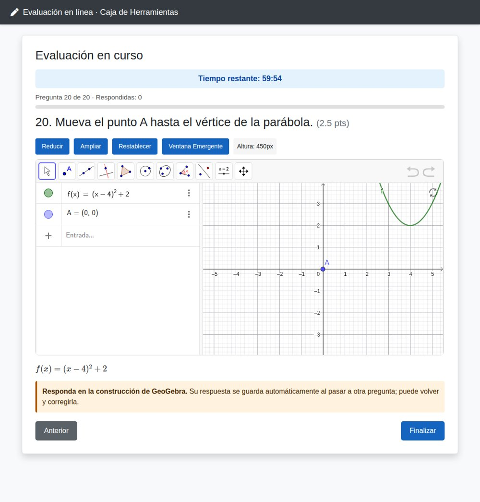
Indica qué preguntas funcionaron y cuáles conviene revisar.
Detalle_Nombre_ID.xlsx de los estudiantes, incluidos los de la versión 1 (diciembre de 2025). El histórico Resultados_Evaluacion_Generada.xlsx no sirve: trae solo la nota de cada estudiante, y la aplicación lo indica.| Indicador | Qué significa | Valores de referencia |
|---|---|---|
| Dificultad $p$ | Proporción de aciertos | Ideal entre 0,3 y 0,8; más de 0,9 muy fácil; menos de 0,2 muy difícil |
| Discriminación $D$ | Aciertos del 27 % con mejor nota menos aciertos del 27 % con peor nota | $\ge 0{,}4$ excelente; 0,2–0,4 aceptable; negativa: revisar la clave |
| Ítem-resto $r$ | Relación entre acertar la pregunta y la nota en las demás | $\ge 0{,}3$ buena; cerca de 0 o negativa: no mide lo mismo que el resto |
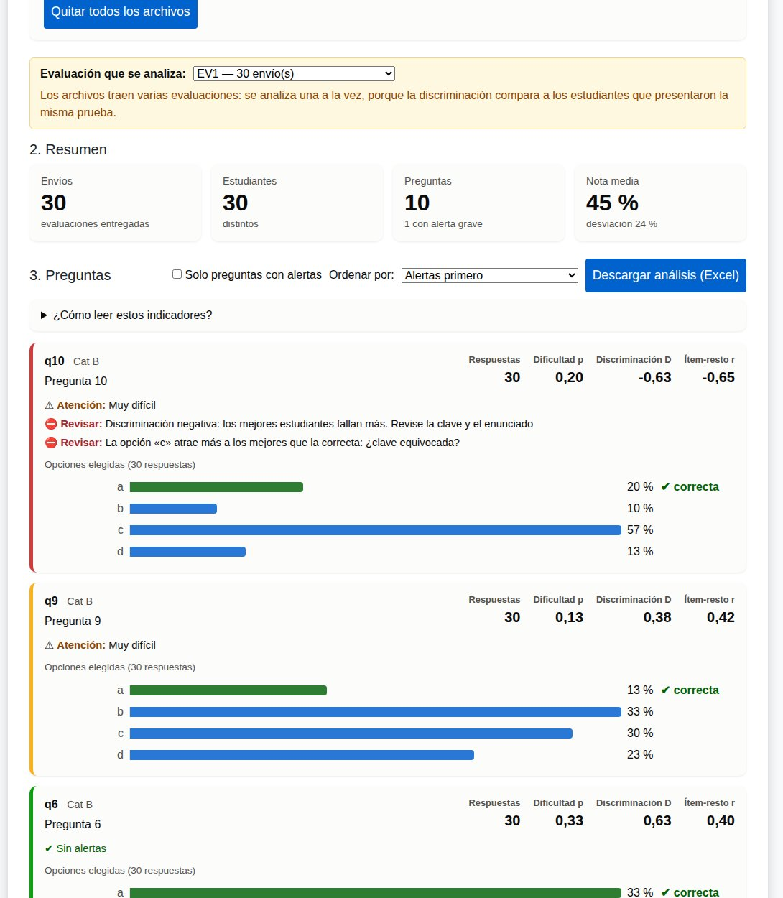
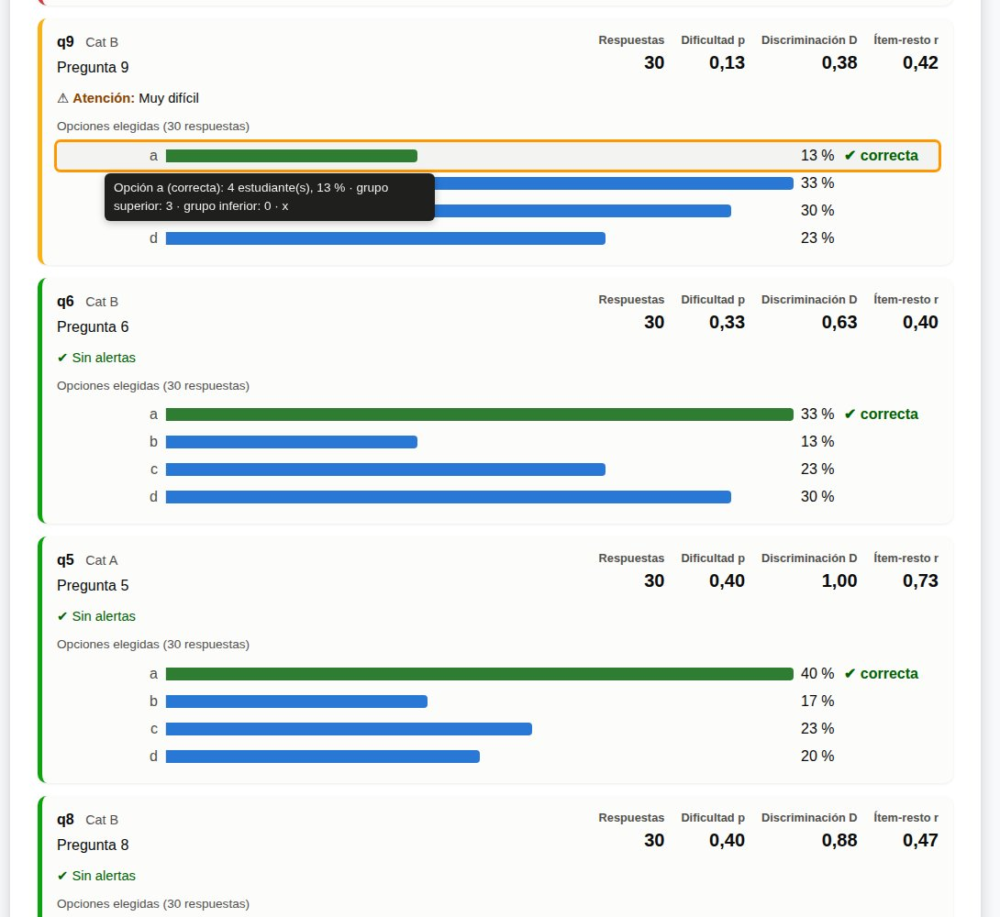
Con Solo preguntas con alertas se filtra la lista, y con Ordenar por se cambia el orden. Descargar análisis (Excel) guarda las hojas «Preguntas», «Distractores», «Categorías» y «Estudiantes» de la evaluación elegida (su ID va en el nombre del archivo).
Las preguntas están en js/modules/, un archivo por categoría. Después de editar un módulo, ejecute en una terminal, dentro de la carpeta de la aplicación:
node merge_questions.js
El comando valida el banco: la respuesta debe estar dentro del rango, no puede haber opciones repetidas y cada fórmula debe mostrarse bien. De las preguntas paramétricas genera 40 versiones y las revisa todas. Luego reescribe js/data/questions.js, que es el que usan la práctica y el generador. Si encuentra un error, no modifica nada e indica la pregunta por su ID.
disabled: 'motivo',. Los ID de las demás no cambian.geogebraState (1, 2, 3…). En js/geogebraEstados.js se define qué valores toman los deslizadores en cada estado; por ejemplo, el triángulo de Herón se muestra con lados 7, 9 y 12 en el estado 1. La construcción se ajusta sola al abrir la pregunta, también en la ventana emergente.params y las expresiones entre llaves dobles, por ejemplo {{a*n}}. Las instrucciones completas están al comienzo de js/parametric.js.Videos del canal de YouTube del profesor John Jairo Estrada, del equipo de la Caja de Herramientas, asociados a las categorías del banco. Cada tema tiene botones Practicar: … que abren la práctica con esa categoría ya elegida. Con Ver el canal completo se abre el canal.
| Tema | Videos | Categorías |
|---|---|---|
| Sistemas de ecuaciones lineales 2 × 2 | 3 | Sistemas de Ecuaciones |
| Expresiones y ecuaciones cuadráticas | 4 | Factorización y Simplificación; Ecuaciones y Despejes |
| Antiderivadas y técnicas de integración | 5 | Cálculo Integral |
| Raíces de ecuaciones: bisección y secante | 2 | Análisis Numérico |
| Ecuaciones diferenciales (apoyo) | 1 | Ecuaciones Diferenciales (PVI) |
| La recta en el plano | 1 | Geometría del Plano Cartesiano |
| El espacio tridimensional y las superficies | 2 | Superficies en el Espacio 3D; Geometría Vectorial |
| Varias variables: derivadas parciales e integrales dobles | 4 | Cálculo multivariado |
| Áreas y volúmenes (apoyo) | 1 | Geometría; Geometría del Triángulo |
| Regla de tres directa | 1 | Regla de Tres (Agro); Regla de Tres (Simple e Inversa) |
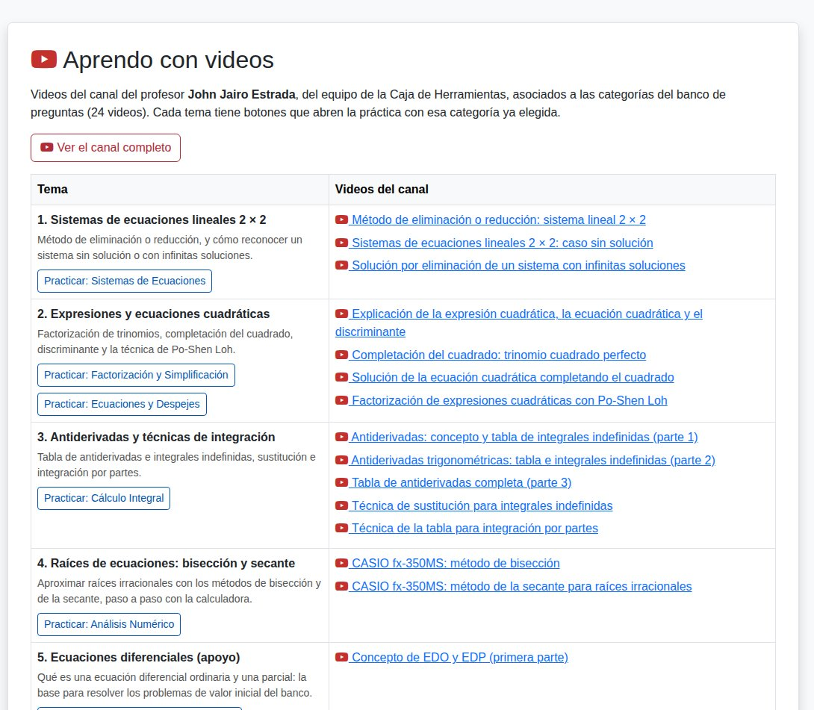
La pestaña Geogebra Clásico enlaza a las aplicaciones oficiales en español (Clásico, Cálculo simbólico, Calculadora gráfica y 3D) y trae una tabla de comandos para comprobar respuestas. Cada comando tiene un botón para copiarlo.
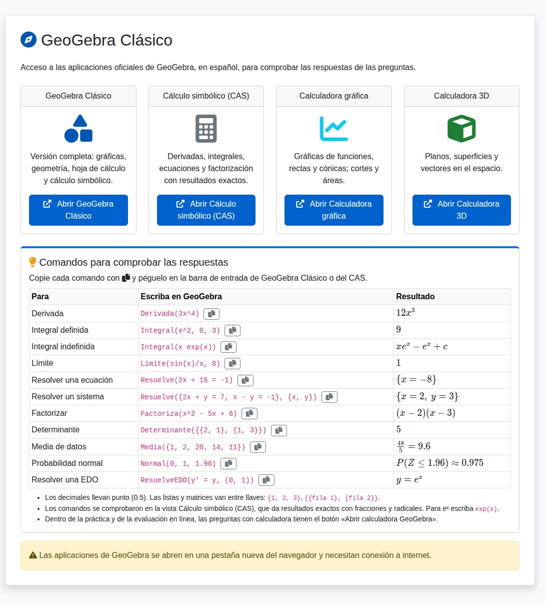
| Para | Escriba | Resultado |
|---|---|---|
| Derivada | Derivada(3x^4) | $12x^3$ |
| Integral definida | Integral(x^2, 0, 3) | $9$ |
| Resolver un sistema | Resuelve({2x + y = 7, x - y = -1}, {x, y}) | $x = 2,\ y = 3$ |
| Factorizar | Factoriza(x^2 - 5x + 6) | $(x - 2)(x - 3)$ |
| Probabilidad normal | Normal(0, 1, 1.96) | $P(Z \le 1{,}96) \approx 0{,}975$ |
exp(x); con e^x el CAS puede tomar e como una variable.Muestra este manual. Con Ver en ventana emergente se abre aparte, para consultarlo mientras trabaja; si el navegador bloquea la ventana, aparece un aviso en la página. Con Descargar PDF se guarda una copia.
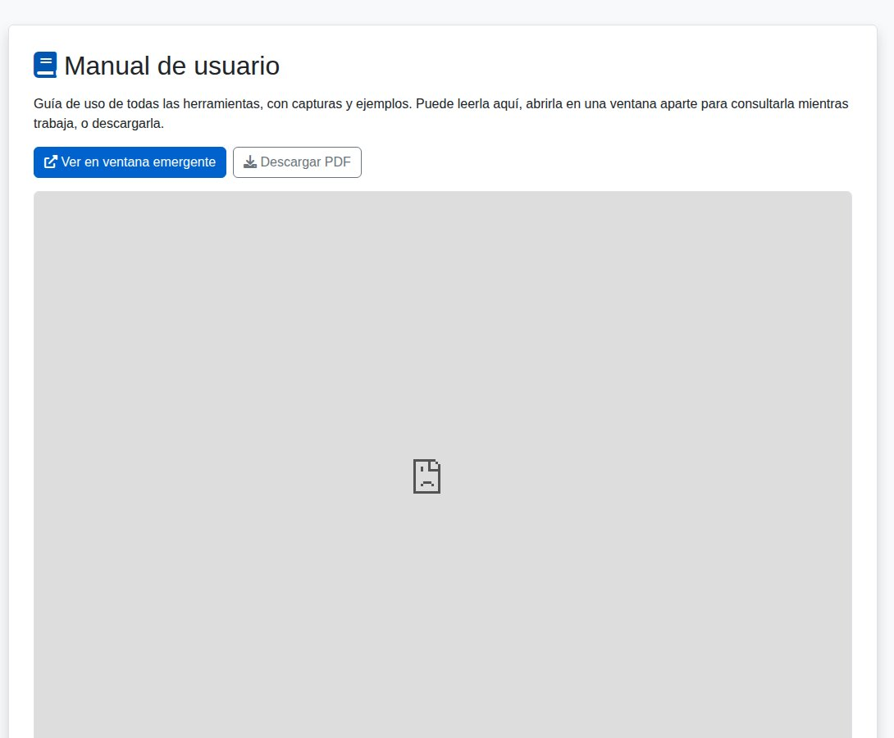
| Situación | Causa y solución |
|---|---|
| GeoGebra no aparece o dice que no pudo cargarse | Necesita internet. Sin conexión, la pregunta se puede responder igual (salvo las tareas de GeoGebra). |
| «La construcción de GeoGebra de esta pregunta no está disponible» | El material fue retirado de geogebra.org o no hay conexión. Pulse «Abrir calculadora GeoGebra» para usar la calculadora genérica. |
exam.html dice que no encontró la evaluación | Por seguridad, los datos se borran al cargarlos. Vuelva a pulsar «Realizar Evaluación en Línea» o use «Cargar archivo de evaluación» con el .examen. |
| No se abre la ventana de la evaluación o del manual | El navegador bloqueó la ventana emergente: permítalas para esta página. |
| Los resultados no llegan a Google Sheets | Revise la dirección y la palabra clave en js/config.js (deben coincidir con Codigo.gs) y la conexión. Los resultados pendientes se reenvían al abrir la aplicación con internet. |
| «Previsualizar» no avanza | Se necesitan al menos 20 preguntas y exactamente 50 puntos: use «Repartir puntos». |
| Cambié un módulo y no veo el cambio | Ejecute node merge_questions.js y recargue la página. |
| Un video no abre | Necesita internet; se abre en una pestaña nueva de YouTube. |
| El análisis dice «no se reconoció el formato» | Cargue la hoja «Detalle» de Google Sheets (xlsx o csv) o los Excel «Detalle_…» que descargan los estudiantes. |